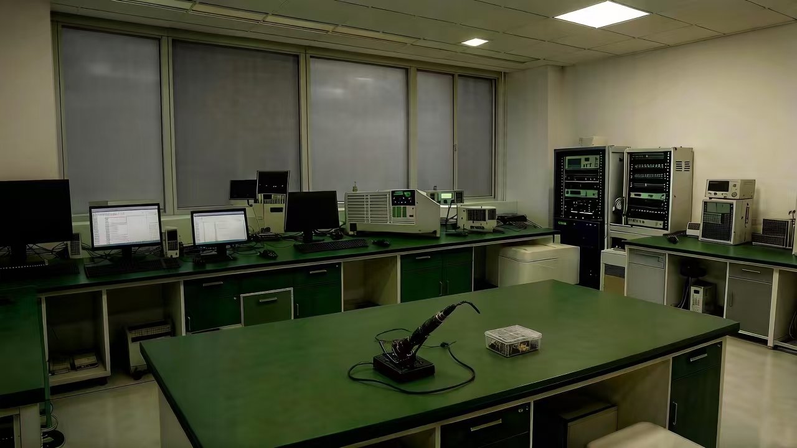

一、研发 | 协同创新，一次做对
以客户需求与市场前沿为双导向，将“第一次做正确”理念前置。
Guided by both customer needs and market trends, the philosophy of "Do It Right the First Time" is implemented from the outset.
People-Centric. Professional. Sincere. Reliable.
Respect in Every Interaction. Value in Every Delivery.

Guided by both customer needs and market trends, the philosophy of "Do It Right the First Time" is implemented from the outset.
Leveraging a mature electronic supply chain and quality control system, the principle of "Sincerity and Altruism" is integrated into every manufacturing detail.
Delivery is not merely logistics; it is the starting point of the customer experience and long-term collaboration, aiming to achieve "Symbiosis and Mutual Win."
Rooted in a solid foundation, we relentlessly pursue excellence. Committed to refining every detail and conquering every challenge, we drive lasting success for our clients through unwavering collaboration and uncompromising quality.
From concept to prototype, we collaborate closely with you, integrating optical, electronic, and structural design to transform your ideas into manufacturable, superior solutions efficiently.
Leveraging a mature electronic supply chain and a "Do It Right the First Time" quality control system, we deliver high - precision, highly consistent production across the entire process—from SMT to final assembly.
Through standardized processes (SOP) and end - to - end quality management, we ensure every project advances smoothly, delivering outcomes that surpass expectations.
We pledge flexible, punctual, and transparent delivery. From logistics to after - sales support, we offer end - to - end stewardship, evolving into your trusted extended manufacturing partner.
We always prioritize the success of our clients and partners. Every decision and action stems from the spirit of "Sincerity & Benefiting Others," committed to building long - term win - win relationships that transcend mere commercial transactions.
We stand on the cornerstone of "Do It Right the First Time," with reliable quality and a robust process system as our foundation. In a rapidly changing market, we are dedicated to being a stable and trustworthy pillar for our clients' growth.
davyxia@heilzen.com Wechat: davyxh